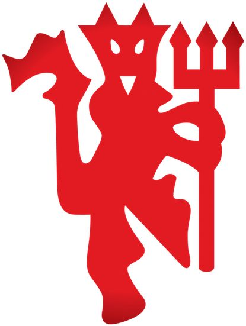
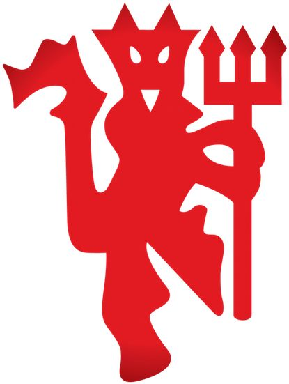

Manchester United Football Club
Manchester United Football Club, commonly referred to as Man United is a professional football club based in Old Trafford, Greater Manchester, England. Domestically, Manchester United have won a record 20 top-flight league titles, 13 FA Cups, 6 League Cups and a record 21 FA Community Shields. Additionally, in international football, they have won the European Cup/UEFA Champions League three times, and the UEFA Europa League, the UEFA Cup Winners' Cup, the UEFA Super Cup, the Intercontinental Cup and the FIFA Club World Cup once each.
Manchester United is one of the most successful clubs in English football history, and has a large global following. The club's home ground is Old Trafford, which has a capacity of 74,140, making it the largest club football stadium in the United Kingdom.
/origin-imgresizer.eurosport.com/2017/03/07/2038308-42761647-2560-1440.jpg
)
Manchester United, often nicknamed "Man Utd," has a global fanbase estimated at 1.1 billion fans and followers. The club is known for its strong fan culture and has various fan groups, including official supporters' clubs, fans forums, and independent fan channels. The club also has a history of hooligan firms, though the term "Red Army" is now more widely used to refer to fans in general.